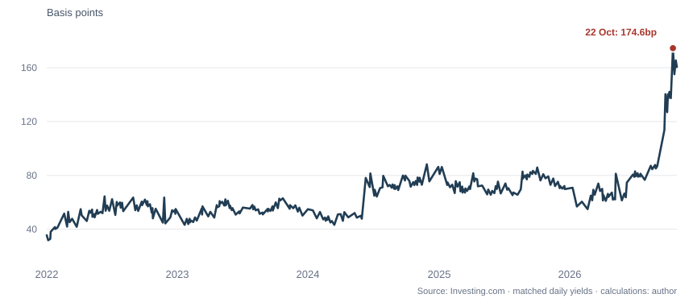

France's government is still able to sell its bonds. The trouble is what investors now charge to hold them. On October 22nd the yield on ten-year French debt stood 175 basis points above its German equivalent, compared with 36 at the start of 2022 (see chart). The widening gap reflects a growing premium for lending to Paris. It also raises a less obvious question: how far can fiscal worries spread into private credit?
France's finances give investors plenty to consider. In September the government revised its 2026 deficit forecast to about 5.4% of GDP. Debt-servicing costs were expected to rise from €79bn this year to €91bn in 2027, according to The Economist. Weak growth and disputes over spending cuts make those sums harder to contain. Higher borrowing costs can then worsen the fiscal arithmetic as existing debt matures.

One route into the wider economy runs through banks. European regulations give qualifying government bonds favourable capital treatment, and banks use them as liquid assets and collateral. The European Banking Authority estimates that EU and EEA banks held €4.18trn in sovereign exposures at the end of 2025. When yields rise, bond prices fall. Some losses hit reported capital; others remain unrealised, depending on accounting treatment. Either way, lower market prices can matter for collateral and funding.
This is the logic of the sovereign-bank “doom loop”: government stress weakens banks, which may then require public support, worsening the government's finances. Yet that neat story fits France imperfectly. The IMF found that only about 10% of major French banks' domestic sovereign holdings—less than 0.6% of total assets—were marked to market. Direct valuation risk, it concluded, was contained. The same report nevertheless warned that higher government borrowing costs could affect banks through their own funding costs and borrowers' ability to repay.
There are signs of caution in the credit market. In the ECB's October survey, the net shares of French banks reporting tighter credit standards were 27% for business loans and 38% for consumer credit in the third quarter. Higher perceived risks and reduced willingness to take them were important explanations. That does not establish that the sovereign sell-off caused the tightening. Weak growth, geopolitical uncertainty and energy costs can influence lending independently of bond-market losses.
The distinction matters. Banks need not suffer a capital crisis to make credit dearer or harder to obtain. Companies may postpone investment; households may delay purchases financed by borrowing. Softer demand can weaken tax revenues, leaving the government with less room to repair its finances. Europe's interconnected bond holdings and funding markets offer routes for such pressures to spread, though not proof that they have.
France's immediate danger may therefore be slower and less dramatic than a banking collapse: a squeeze on private credit that makes a difficult fiscal adjustment harder still.